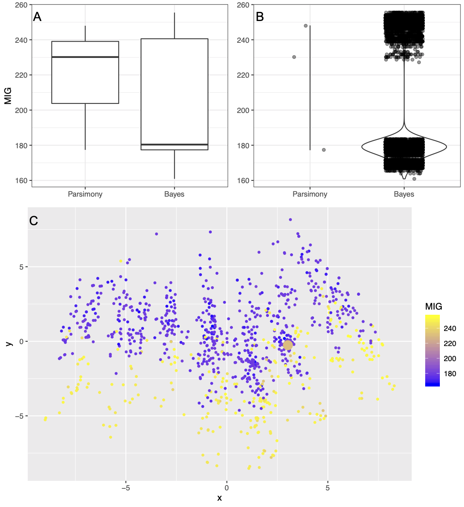

00_Paper
April Wright & Graeme Lloyd
11/11/2019
00_Manuscript.RmdBAYESIAN ANALYSES IN PHYLOGENETIC PALAEONTOLOGY: INTERPRETING THE POSTERIOR SAMPLE
APRIL M. WRIGHT1* and GRAEME T. LLOYD2*
1Department of Biological Sciences, Southeastern Louisiana University, 2400 N. Oak St., Hammond, LA 70403, USA; april.wright@selu.edu
2School of Earth & Environment, University of Leeds, Maths/Earth & Environment Building, Leeds, LS2 9JT, UK; graemetlloyd@gmail.com
*Shared first authors
_____________________________________________________________________________
Abstract:
Establishing hypotheses of relationships is a critical prerequisite for any macroevolutionary analysis, but different approaches exist for achieving this goal. Amongst palaeontologists using morphological data the Bayesian approach is increasingly preferred over parsimony, but this shift also alters the way we think about samples of trees. Here we revisit stratigraphic congruence as a comparator between Bayesian and parsimony samples, but in a new visual context: treespace. Such spaces represent an ordination of unique topologies that can also be extended to create a “landscape” where altitude represents some comparative measure (here congruence with stratigraphy). By co-opting existing visualization tools and applying them to a meta-analysis of 128 cladistic data sets we show that there is no consistent favouring of either Bayesian or parsimony according to stratigraphic congruence metrics, and further that empirical treespace visualizations suggest a complex variety of topological landscapes. We conclude by arguing that treespaces should become a standard exploratory tool in phylogenetic analysis.
INTRODUCTION:
Inferring the tree of life and using phylogenetic trees to understand organismal form and function are primary challenges of biology. Phylogenetic trees provide a historical perspective on relationships between taxa, and performing comparative biological studies without a phylogenetic context is misleading (Felsenstein 1985). While many researchers in comparative biology have moved to using molecular character data to estimate phylogenetic trees, fossils remain the sole source of character data for many extinct groups. Fossils also provide the only direct evidence for historical trends in many groups (Cobbett and Wills 2007; Koch and Parry in press). Excluding fossils from trees has been demonstrated to bias the inferences we draw from phylogenetic comparative analyses (Slater et al. 2012). Therefore, how to best include fossils in phylogenetic analyses remains a vital and thriving research topic.
Phylogenetic analyses of discrete morphological data have traditionally been conducted under the maximum parsimony criterion, but Bayesian approaches are increasingly being employed instead. In part this is because Bayesian implementations allow not just estimation of topology, but more complex analyses, such as divergence time estimation. Bayesian methods assume an explicit model of evolution, and allow the researcher to set priors on each parameter in their model. In effect, this allows researchers to incorporate prior information and/or intuition about the value of parameters into their analysis. The most basic and restrictive model of morphological evolution is the Mk model (Lewis 2001). This model assumes equal rates of change between each state at a character. In practice, these assumptions are not much different than the basic assumptions of an equal-weights parsimony step matrix. However, these methods calculate a rate-based branch length in expected substitutions per site, allowing for the accommodation of multiple changes along a branch (e.g., a 0 state to a 1 state and back again), something parsimony cannot do. More elaborate models that allow for relaxation of the core assumptions of the Mk model have been published (Nylander et al. 2004) and evaluated (Wright et al. 2016).
Comparing the results of a Bayesian analysis and a parsimony analysis can be difficult. Bayesian methods estimate what is called the posterior sample. The posterior sample is a set of trees and associated model parameters that are plausible given the data, the model, and any priors. Phylogenetic trees are often estimated using Markov-Chain Monte Carlo (MCMC) sampling (Metropolis et al. 1953; Hastings 1970). Under this algorithm, a tree and model parameters are proposed and evaluated given the model and priors. In general, if the tree and model parameters have a better likelihood score than the previous tree and model parameters, the new solution is kept. MCMC is considered a memoryless process; that is, the next proposed tree and model parameters are not chosen based on previously-sampled trees. A good tree may therefore be visited many times in a Bayesian estimation. Because an MCMC analysis will visit solutions in proportion to their likelihood, how often a particular tree or set of relationships appears in the posterior sample is considered to be a measure of support for that tree. Usually the researcher will compute a summary tree for publication, though tools now exist to visualize sets of phylogenetic trees (Hillis et al. 2005; Jombart et al. 2017; Warren et al. 2017).
This is in stark contrast to parsimony. The aim of parsimony is to estimate the most parsimonious tree. The most parsimonious tree is the one that minimizes the number of character changes in the dataset implied by the tree. Under the criterion of maximum parsimony, a tree is proposed, and the changes implied in the morphological character matrix by that tree are counted. A tree is considered better than another if it has a lower parsimony score. Many datasets will have one tree that minimizes the parsimony score. In this case, a point estimate of the phylogeny is typically published by the author. However, in some datasets several most parsimonious trees may be returned, due to either lack of signal or conflicting signal. In this case, a summary tree is usually created. The most common of these is some form of consensus tree, which displays all phylogenetic relationships that are present in some proportion of the most parsimonious trees. Common variations include a strict consensus tree, in which all clades on the summary tree are represented in all parsimonious trees, and majority rule consensus trees, in which clades on the summary tree are represented in more than 50% (or some larger fraction) of the set of most parsimonious trees.
How to compare a Bayesian posterior sample and a set of most parsimonious trees is a fraught topic. There are many aspects of parsimony analyses that are not strictly comparable to Bayesian analyses. For example, synapomorphies are interpreted differently in a Bayesian analysis, as multiple changes can occur along a branch. Bayesian analyses consider branch lengths (in substitutions per site for an undated tree) to be parameters of the model. Therefore, Bayesian tree summarizations take these values into account (Bouckaert et al. 2014; Brown et al. 2017; O’Reilly and Donoghue 2017), not solely the topology. Support values for bipartitions in the tree are calculated as part of a Bayesian estimation, being the number of times that a set of relationships is contained in the posterior sample, as a topology can appear multiple times in a Bayesian sample but is not retained more than once in a parsimony sample. The assumption is that the sample, not simply the “best” tree, contains vital information.
Because of these differences, formulating a fair comparison between parsimony and Bayesian trees is difficult. Most studies to date have focused on intrinsic comparisons, those comparisons about the tree itself. For example, most simulation studies to date have simulated data along a given tree or set of trees. Then, from the simulation data, a tree has been estimated under both parsimony and Bayesian methods. Finally, a summary tree for each method is computed and compared to the tree under which it was simulated. Often, this focuses on the behavior of the researcher, comparing a Bayesian consensus tree to a parsimony consensus tree (Wright and Hillis 2014). Most phylogenetic estimates in published articles are presented as point estimates. Because parsimony trees are most commonly published as majority-rule or strict consensus trees, computing this type of summary for both treatments (parsimony and Bayesian) and comparing them is fairly straightforward. Comparisons have typically involved tree-based metrics, such as the Robinson-Foulds (Robinson and Foulds 1979, 1981), which supplies the number of bifurcations that differ between two trees. While this approach makes sense for many questions, it also does not include or account for most of the results associated with Bayesian estimation (the posterior sample).
An underutilized comparative tool between trees is their stratigraphic congruence – how well they match the order of appearance of taxa in the fossil record. Sansom et al. (2018) used stratigraphic congruence to compare parsimony and Bayesian summary trees to assess which analytical method produces trees that best fit the fossil record. The most attractive feature of this approach is that it employs extrinsic criteria, evaluating how well the tree fits data external to that used to infer the tree. Stratigraphic congruence methods (Table 1) use various measures to determine how well an estimated tree fits first and last appearance data for the fossil tips on this tree. Sansom et al. estimated trees for empirical datasets under both Maximum Parsimony and Bayesian estimation, computed consensus trees, and calculated stratigraphic fit for a sample of 500 trees from the posterior, then averaged those stratigraphic congruences. This is a novel way to independently compare the fit of trees produced under different optimality criteria, although previously it has been used to compare competing hypotheses of relationships for the same set of taxa (Brochu and Norell 2000; Pol and Norell 2006; Rahman et al. 2009). In this manuscript, we extend this approach to evaluate the whole posterior sample for stratigraphic fit and, critically, plot stratigraphic fit of individual trees in the posterior or the set of most parsimonious trees in “treespace” (Hillis et al. 2005). We conclude that averaging a posterior sample to a summary statistic is an oversimplification, and encourage the use of more sophisticated visual tools, such as RWTY (Warren et al. 2017) to incorporate the variation in any one metric.
MATERIALS AND METHODS
Dataset Filtering
Empirical datasets were downloaded from graemetlloyd.com/matr.html, the same starting repository used by Sansom et al. (2018). We initially excluded anything molecular, phenetic, ontogenetic or meta-analytical as these do not represent data sets intended for morphological phylogenetic inference (our focus here). We additionally removed data sets with polymorphic or inapplicable characters as these are currently not well dealt with by Bayesian implementations. In the repository, and more broadly amongst morphological phylogenetics, many datasets are derived from older datasets with little or no modification. For example, a matrix in the repository may have derivative matrices in which subsequent tax(a) or character(s) were added (see Figure S1 of Hartman et al. 2019 for an excellent illustration of how complicated this issue can become). For this study, if there were multiple dataset derivatives, we chose the largest or most expansive dataset using the same criteria applied by Wright et al. (2016) and the appropriate metadata available in the XML files associated with each data set (Lloyd et al. 2016). The same XML files contain taxonomic reconciliations - links between OTU names used in the trees with taxa entered into the Paleobiology Database, the source used for our (and Sansom et al. 2018) age data. Using the API (Peters and McClennen 2016) we further filtered the data down to just those where all taxa are both reconciled and have age data available in the database (i.e., at least one fossil occurrence is attributable to each OTU). The final pool comprised 128 different data sets (Lloyd and Wright 2020).
Phylogenetic Analysis
Each data set was analyzed under both Maximum Parsimony and Bayesian criteria.
For the Bayesian approach we analysed each dataset under the Mk model in the software RevBayes (Höhna et al. 2014, 2016). We partitioned each dataset according to the number of states per character in order to specify an appropriate Q-matrix. Among-character rate variation was parameterized according to a Gamma distribution with four discrete categories. Branch lengths were drawn from an exponential distribution. Datasets were run for one million generations, and then assessed visually for convergence using Tracer (Rambaut et al. 2018). The full posterior sample, and not a point estimate, was taken forward for analysis in each case.
Maximum Parsimony trees were re-estimated for each data matrix using TNT (Goloboff and Catalano 2016). Implicit enumeration was used where there were 24 or fewer tips. For larger tip counts 20 replicates of new technology searches followed by a round of tree bisection-reconnection were applied with maxtrees capped at 100,000. All equally most parsimonious trees are retained here up to this 100,000 limit. Note that a fairer comparison with Bayesian phylogenetic inference would be to also include trees a few steps longer, and hence our choice here is to reflect practical usage (only retaining the most parsimonious trees) rather than optimality (parsimony) more generally.
Stratigraphic Congruence
We calculated stratigraphic congruence values for each tree in the Bayesian posterior sample, and each most parsimonious tree in the output. For each dataset, we used the PaleobiologyDBOccurrenceQuerier function in the metatree R package (github.com/graemetlloyd/metatree) to query the Paleobiology Database for minimum and maximum ages of each tip in the analysis. Using the R package strap (Bell and Lloyd 2015), we calculated several stratigraphic congruence metrics: Minimum Implied Gap (MIG), Stratigraphic Consistency Index (SCI), Relative Completeness Index (RCI), Gap Excess Ratio (GER), Manhattan Stratigraphic Measure (MSM), and Wills’ modifications of GER (GERt and GER). An explanation of these metrics can be seen in Table 1.
For each set of topologies and stratigraphic congruence results, we plotted a treespace plot in the R package RWTY. RWTY calculates the topological differences between the trees in the posterior sample using the Robinson-Foulds metric. This metric calculates the number of splits that are on one tree, but not the other. Then, RWTY uses a multi-dimensional scaling (MDS) algorithm (Gower 1966) to plot these differences to 2-D space. We modified RWTY to color points according to their stratigraphic consistency score. We visualized the set of most parsimonious trees and the Bayesian posterior sample in the same treespace plots.
We also conducted a number of tests to verify the patterns we saw in treespace. MDS scaling can cause distortion of observed distances in the situation that variation is spread across multiple axes (Hillis et al. 2005). Therefore, we used K-Means testing to verify that regions of treespace that appear distinct in a treespace plot truly are. We also plotted the MIG differences and MDS distances directly against one another to assess if patterns seen on treespace plots persist in this visualization.
The full set of code and data used are available at both the Dryad (Lloyd and Wright 2020) and GitHub (github.com/graemetlloyd/ProjectWhalehead) repositiories.
RESULTS
For direct comparison with Sansom et al. (2018), we made boxplots of the distributions of several stratigraphic congruence measures (Lloyd and Wright 2020). We made these figures comparing the posterior sample and the set of most parsimonious trees for each dataset, and each stratigraphic congruence metric shown in Table 1. Note that a major difference between a Bayesian sample and a parsimony sample is that the former can include duplicate trees (those visited multiple times by the MCMC, and will return all trees visited in the analysis, whereas a parsimony analysis only returns unique topolog(ies), stripped of any visit count information). The net result of this is that Bayesian samples will generally show more points than the parsimony sets of trees, and often show more variance. Examples of this can be seen in the boxplots in Figs. 1A and 2A. The spread of stratigraphic congruence metrics is much higher in the Bayesian analysis and this is typical of the majority of data sets. For most metrics, the median of the parsimony sample is lower than the median of the Bayesian sample (Supplementary Table 1). However, in most instances the stratigraphic congruence of the most parsimonious tree, or set of trees, is contained within the quartiles of the boxplot.
We also visualized these data as treespace plots. An example treespace plot can be seen in Fig. 1C, and the full set of treespace plots is available in the supplemental material. These multi-dimensional scaling graphs demonstrate that the Bayesian posterior samples contain many more trees, including many more trees that are substantially different from one another, than the parsimony estimations do. This is expected, as the Bayesian results include the entire posterior sample. In most estimations, the posterior sample contains (envelops) the parsimony trees, in addition to other solutions plausible under the model. As shown in Fig. 1C, it is very possible (and even common) in both Bayesian and maximum parsimony estimation to have topologies with good stratigraphic fit appear near trees with poor stratigraphic fit (and for apparently dissimilar trees to have similar or even identical stratigraphic fits). This suggests that in some treespaces, there may be little topological difference between a tree that is quite good with respect to stratigraphic fit and a tree with poor stratigraphic fit. In other words, the landscapes of stratigraphic congruence may be highly volatile - something boxplots cannot capture or suggest. (This can be shown directly in Fig. 3, where a landscape generated from all possible trees of six tips is shown.) As in the boxplots, the treespace plots largely suggest that the parsimony trees fall within the range of solutions explored in a Bayesian search. It should be noted, however, that some appearance of volatility can be due to the compression from multiple axes of variation down to 2 dimensions (Lloyd and Wright 2020).
DISCUSSION
Summarizing a posterior sample
The aim of a Bayesian analysis is not a single point estimate of a solution. Rather, it is to examine solutions and outcomes that are plausible given the model and the data. This is particularly important in phylogenetics, where we are estimating lineage divergences that occurred tens or hundreds of millions of years ago. We do this from scarce, and likely biased data, using models that may or may not adequately capture reality. To responsibly present a solution under these conditions must mean incorporating uncertainty in that solution. It is prudent to avoid using a single point estimate summary of a posterior sample, whether a summary tree or an average value computed across several trees.
The authors of this work are not immune to using a point estimate of topology from a posterior sample to compare to a point estimate of a parsimony topology (see Wright and Hillis 2014).
In some cases, this is a pragmatic choice, given that consensus summaries are common in the literature. But the properties of a Bayesian analysis are different than a parsimony analysis. A Bayesian analysis represents solutions that are plausible under a model. In practice, a typical parsimony analysis, on the other hand, pre-filters trees by whether or not they are the best under the maximum parsimony criterion. This means that the Bayesian sample will almost certainly contain more sub-optimal trees than the parsimony sample. This has the effect, when stratigraphic congruence measures are averaged for the posterior sample, of pulling down the mean of the distribution of stratigraphic consistency values. It should be noted that researchers could choose to retain more of the trees sampled under the parsimony criterion, e.g. those within five steps of the shortest tree, though this is rarely done. Doing so will likely result in a wider set of solutions to visualize.
There is an additional complication to interpreting a Bayesian posterior distribution: that the distribution itself is meaningful. Because a Markov Chain Monte Carlo analysis is memoryless, and solutions are sampled in proportion to their likelihood and the prior, a good solution will be visited many times. In fact, popular metrics of phylogenetic support, such as the posterior probability are calculated directly from the posterior sample for this reason. That the distribution of solutions itself contains information means that approaches, such as randomly sampling trees from the posterior, may give some sense of the variation. But they can also fail to approximate the true distribution of the posterior, particularly given that the variance in a posterior sample is unlikely to be normally distributed.
However, it is also not reasonable for researchers to examine every single tree in a posterior sample. How can a researcher draw reasonable conclusions from their posterior sample? Over the past five years, modern and open-source treespace visualization software has become available. As demonstrated in Fig. 1C (a treespace plot made from the posterior sample estimated from the Yates 2003 dataset), treespace visualizations attempt to show the distance between trees in the sample (but see Hillis et al. 2005), and enable researchers to color points by other factors (formally generating so-called tree “landscapes”; St. John 2016). As can be seen in Fig. 1C, both the Bayesian and parsimony analyses predominantly seem to sample two islands of treespace. The points in this graphic suggest that topologically similar trees can have wildly different Minimum Implied Gap scores. For this dataset, it does not appear that certain regions of treespace produce better stratigraphic congruence. This is in contrast to Fig. 2C (a treespace plot made from the posterior sample estimated from the Demar 2013 dataset), in which some areas of treespace clearly contain trees that have better fit to the stratigraphic record. This finding was confirmed by using K-Means estimation to detect clusters within the sets of MIG scores per posterior sample (Lloyd and Wright 2020).
Prior research (Hillis et al. 2005) has indicated that visualizing MDS results in 2-dimensions may compress treespace in a way that can cause artifacts. Under the MIG metric, two trees that are topologically similar to one another can produce very different MIG scores, and two trees that are topologically quite different can produce similar MIG scores. Therefore, we did a set of estimates comparing the MDS distances (across all axes) to the MIG differences. These plots (Lloyd and Wright 2020) indicate that while there may be some stressing of treespace, this generally should not inhibit the use of treespace plots as an exploratory tool.
Stratigraphic congruence and optimality criterion
Which analytical method is most congruent with stratigraphy is an altogether murkier question when the fullness of the posterior sample is considered. A table of averages for Yates (2003) and Demar (2013) is provided in Table 2. Here we limit our consideration to just the MIG metric, as this is both a simple way to capture the key difference (total implied missing history in millions of years) and is the primary variable driving three of the four other metrics (GER, MSM*, and RCI). The other (SCI) is not favoured here as it treats all implied gaps in the record the same regardless of their size. As can be seen from Table 2, sometimes the MIG favours the Bayesian posterior sample, sometimes the set of most parsimonious trees. Overall, 47 of 128 datasets (36.7%) had lower mean MIG using Bayesian methods (Table S1). However, for 120 of 128 datasets (93.8%) the lowest MIG tree belonged to the Bayesian sample and for 127 of 128 (99.2%) datasets the Bayesian sample included the highest MIG tree.
An average may not provide a good accounting of the variation in the results for each dataset. In Fig. 2A and 2B, we show a dataset from Demar (2013). The treespace for this dataset can be seen in Fig. 2C. This suggests a highly structured treespace: because Bayesian MCMC samples in proportion to the posterior probability, we infer from the shape of this treespace visualization that there are two peaks to this distribution that contained fairly good trees. There are three most-parsimonious trees; two are sampled from one peak with poor stratigraphic fit, one is sampled from the peak with fairly good stratigraphic fit. In this case, averaging is unlikely to produce a value that represents either peak adequately, and the average in this case is a value that does not belong to a tree that was sampled in the analysis at all.
In the case of the Yates (2003) dataset, treespace appears to be sampled much more evenly. In this case, taking an average might represent the sample better. Even so, there are a number of problems with comparing means. As shown in the boxplots of Fig. 1, the mean and variance for the parsimony estimates are almost wholly subsumed in the Bayesian posterior sample. This is largely expected: the Bayesian posterior sample encompasses all trees sampled in the analysis (typically thinned by some proportion as they are exported from the tree estimation software). The set of most parsimonious trees contains a sample of the best trees according to an optimality criterion (fewest implied evolutionary steps). Assuming both estimation criteria are using the same data to sample the same treespace, we would expect that averaging among only the best trees should produce better stratigraphic congruence. In other words, the typical implementation of the parsimony criterion should be set up to appear superior to the typical Bayesian implementation. However, looking across all the datasets, only a slight improvement is seen from this biased averaging (Table S1, Sansom et al. 2018, their Fig. 1).
Which analytical method produces better stratigraphic congruence is the wrong question. A better question to ask may be “How can researchers explore and quantify variation in their sets of solutions?”. Here we argue a key but underappreciated visualization tool (treespace) may be especially useful. Implementations of such tools have been in place for well over a decade (Hillis et al. 2005), but we are unaware of them being used in any published analysis of samples of trees produced from morphological data. We also note our treespaces appear to exhibit many different kinds of relationships across the datasets examined here. For example, single or multiple-tree islands far separate from the rest of the sample, apparently smooth or volatile gradients of stratigraphic congruence, parsimony samples enveloped by Bayesian samples, or parsimony and Bayesian samples occupying different parts of the space. We note that such visualizations are necessarily exploratory—they represent an attempt to collapse variation in a high-dimensional space into a bivariate plot—but the diversity of the observed landscapes certainly suggests further investigation of many of these patterns is warranted.
CONCLUSION
In this manuscript we have shown that “parsimony versus Bayesian” comparisons do not have a simple outcome that is consistent across all empirical data sets. Instead, we present a modified version of an underutilized set of tools already available in the R programming language that can better help workers visualize and understand large posterior samples, either on their own or in the context of maximum parsimony trees. In particular, we urge the exploration of treespace visualizations to better understand the output from phylogenetic inference. We show that these tools suggest a huge variety of outcomes in the occupation, shape and landscape of such spaces. More complex visualizations of treespace have never been more tractable for the average researcher and we look forward to many years of interesting analyses about how different methods explore and sample phylogenetic treespace.
ACKNOWLEDGMENTS
The authors would like to thank Andrew Smith, Sally Thomas and two anonymous reviewers for suggestions that helped improve the manuscript. GTL would like to thank Mike Foote, Jen Hoyal Cuthill, Laura Soul, Emma Randle and Katherine St. John for discussions and inspiration. AMW was supported by an Institutional Development Award (IDeA) from the National Institute of General Medical Sciences of the National Institutes of Health P20-GM103424-17.
DATA ARCHIVING STATEMENT
Data for this study are available in the Dryad Digital Repository: https://doi.org/10.5061/dryad.zs7h44j4w Please note that the data for this paper are not yet published and this temporary link should not be shared without the express permission of the author. Referees can also consult our GitHub repository: https://github.com/graemetlloyd/ProjectWhalehead
REFERENCES
Bell, M. A. and Lloyd, G. T. 2015. strap: an R package for plotting phylogenies against stratigraphy and assessing their stratigraphic congruence. Palaeontology, 58, 379-389.
Benton, M. J. and Storrs, G. W. 1994. Testing the quality of the fossil record: palaeontological knowledge is improving. Geology, 22, 111-114.
Bouckaert, R., Heled, J., Kühnert, D., Vaughan, T., Wu, C.-H., Xie, D., Suchard, M. A., Rambaut, A. and Drummond, A. J. 2014. BEAST 2: a software platform for Bayesian evolutionary analysis. PLOS Computational Biology, 10, 1-6.
Brochu, C. A. and Norell, M. A. 2000. Temporal congruence and the origin of birds. Journal of Vertebrate Paleontology, 20, 197-200.
Brown, J. W., Parins-Fukuchi, C., Stull, G. W., Vargas, O. M. and Smith, S. A. 2017. Bayesian and likelihood phylogenetic reconstructions of morphological traits are not discordant when taking uncertainty into consideration: a comment on Puttick et al. Proceedings of the Royal Society B: Biological Sciences, 284, 20170986.
Cobbett, A., Wilkinson, M. and Wills, M. A. 2007. Fossils impact as hard as living taxa in parsimony analyses of morphology. Systematic Biology, 56, 753-766.
Demar, D. G. 2013. A new fossil salamander (Caudata, Proteidae) from the Upper Cretaceous (Maastrichtian) Hell Creek Formation, Montana, USA. Journal of Vertebrate Paleontology, 33, 588-598.
Felsenstein, J. 1985. Phylogenies and the comparative method. American Naturalist, 125, 1-15.
Goloboff, P. A. and Catalano, S. A. 2016. TNT version 1.5, including a full implementation of phylogenetic morphometrics. Cladistics, 32, 221-238.
Gower, J. C. 1966. Some distance properties of latent root and vector methods used in multivariate analysis. Biometrika, 53, 325-338.
Hartman, S., Mortimer, M., Wahl, W. R., Lomax, D. R., Lippincott, J. and Lovelace, D. M. 2019. A new paravian dinosaur from the Late Jurassic of North America supports a late acquisition of avian flight. PeerJ, 7, e7247.
Hastings, W. K. 1970. Monte Carlo sampling methods using Markov Chains and their applications. Biometrika, 57, 97-109.
Hillis, D. M., Heath, T. A. and St. John, K. 2005. Analysis and visualization of tree space. Systematic Biology, 54, 471-482.
Höhna, S., Heath, T. A., Boussau, B., Landis, M. J., Ronquist, F. and Huelsenbeck, J. P. 2014. Probabilistic graphical model representation in phylogenetics. Systematic Biology, 63, 753-771.
Höhna, S., Landis, M. J., Heath, T. A., Boussau, B., Lartillot, N., Moore, B. R., Huelsenbeck, J. P. and Ronquist, F. 2016. RevBayes: Bayesian phylogenetic inference using graphical models and an interactive model-specification language. Systematic Biology, 65, 726-736.
Huelsenbeck, J. P. 1994. Comparing the stratigraphic record to estimates of phylogeny. Paleobiology, 20, 470-483.
Jombart, T., Kendall, M., Almagro-Garcia, J. and Colijn, C. 2017. treespace: statistical exploration of landscapes of phylogenetic trees. Molecular Ecology Resources, 17, 1385-1392.
Koch, N. M. and Parry, L. A. in press. Death is on our side: paleontological data drastically modify phylogenetic hypotheses. Systematic Biology. \[doi:10.1093/sysbio/syaa023\]
Lewis, P. O. 2001. A likelihood approach to estimating phylogeny from discrete morphological character data. Systematic Biology, 50, 913-925.
Lloyd, G. T. and Wright, A. M. 2020. Bayesian analyses in phylogenetic palaeontology: interpreting the posterior sample, v2. Dryad Digital Repository. https://datadryad.org/stash/share/dryad.zs7h44j4w
Lloyd, G. T., Bapst, D. W., Friedman, M. and Davis, K. E. 2016. Probabilistic divergence time estimation without branch lengths: dating the origins of dinosaurs, avian flight and crown birds. Biology Letters, 12, 20160609.
Metropolis, N., Rosenbluth, A. W., Rosenbluth, M. N., Teller, A. H. and Teller, E. 1953. Equation of state calculations by fast computing machines. Journal of Chemical Physics, 21, 1087-1092.
Norell, M. A. and Novacek, M. J. 1992. Congruence between superpositional and phylogenetic patterns: comparing cladistic patterns with fossil records. Cladistics, 8, 319-337.
Norell, M. A., Novacek, M. J. and Wheeler, Q. D. 1992. Taxic origin and temporal diversity: the effect of phylogeny. Extinction and Phylogeny. Columbia University Press, New York, 89-118.
Nylander, J. A. A., Ronquist, F., Huelsenbeck, J. P. and Nieves-Aldrey, J. 2004. Bayesian phylogenetic analysis of combined data. Systematic Biology, 53, 47-67.
O’Reilly, J. E. and Donoghue, P. C. J. 2017. The efficacy of consensus tree methods for summarizing phylogenetic relationships from a posterior sample of trees estimated from morphological data. Systematic Biology, 67, 354-362.
Peters, S. E. and McClennen, M. 2016. The Paleobiology Database Application Programming Interface. Paleobiology, 42, 1-7.
Pol, D. and Norell, M. A. 2001. Comments on the Manhattan Stratigraphic Measure. Cladistics, 17, 285-289.
Pol, D. and Norell, M. A. 2006. Uncertainty in the age of fossils and stratigraphic fit to phylogenies. Systematic Biology, 55, 512-521.
Rahman, I. A., Sutton, M. D. and Bell, M. A. 2009. Evaluating phylogenetic hypotheses of carpoids using stratigraphic congruence indices. Lethaia, 42, 424-437.
Rambaut, A., Drummond, A. J., Xie, D., Baele, G. and Suchard, M. A. 2018. Posterior summarization in Bayesian phylogenetics using Tracer 1.7. Systematic Biology, 67, 901-904.
Robinson, D. F. and Foulds, L. R. 1979. Comparison of weighted labelled trees. Combinatorial Mathematics, VI (Proc. Sixth Austral. Conf., Univ. New England, Armidale, 1978), Lecture Notes in Mathematics, 748, 119-126.
Robinson, D. F. and Foulds, L. R. 1981. Comparison of phylogenetic trees. Mathematical. Biosciences, 53, 131-147.
Sansom, R. S., Choate, P. G., Keating, J. N. and Randle, E. 2018. Parsimony, not Bayesian analysis, recovers more stratigraphically congruent phylogenetic trees. Biology Letters, 14, 20180263.
Siddall, M. E. 1998. Stratigraphic fit to phylogenies: a proposed solution. Cladistics, 14, 201-208.
Slater, G. J., Harmon, L. J. and Alfaro, M. E. 2012. Integrating fossils with molecular phylogenies improves inference of trait evolution. Evolution, 66, 3931-3944.
St. John, K. 2016. The shape of phylogenetic treespace. Systematic Biology, 66, e83-e94.
Warren, D. L., Geneva, A. J. and Lanfear, R. 2017. RWTY (R We There Yet): an R package for examining convergence of Bayesian phylogenetic analyses. Molecular Biology and Evolution, 34, 1016-1020.
Wills, M. A. 1999. Congruence between phylogeny and stratigraphy: randomization tests and the Gap Excess Ratio. Systematic Biology, 48, 559-580.
Wills, M. A., Barrett, P. M. and Heathcote, J. F. 2008. The modified Gap Excess Ratio (GER*) and the stratigraphic congruence of dinosaur phylogenies. Systematic Biology, 57, 891-904.
Wright, A. M. and Hillis, D. M. 2014. Bayesian analysis using a simple likelihood model outperforms parsimony for estimation of phylogeny from discrete morphological data. PLoS ONE, 9, e109210.
Wright, A. M., Lloyd, G. T. and Hillis, D. M. 2016. Modeling character change heterogeneity in phylogenetic analyses of morphology through the use of priors. Systematic Biology, 65, 602-611.
FIGURE CAPTIONS AND TABLES

FIG. 1. Plots showing Minimum Implied Gap score (MIG) for the posterior sample and set of most parsimonious trees for the Yates (2003) dataset. Panel A shows boxplots of the distributios of MIG scores, as in Sansom et al. (2018). Panel B shows the same data, but as a violin plot with points overlain. Panel C shows a treespace visualization, with points colored by MIG score. Large points indicate parsimony trees.

FIG. 2. Plots showing Minimum Implied Gap score (MIG) for the posterior sample and set of most parsimonious trees for the Demar (2013) dataset. Plot types and labels are the same as in Fig. 1. In contrast to Fig. 1, there are defined regions of treespace in which trees with better MIG scores are found. 
FIG. 3. Interpolated tree “landscape” (sensu St John 2016) in 3D (upper left) and plan view (upper right), where horizontal axes represent position in the ordination space and vertical axis/colours indicate stratigraphic congruence (Minimum Implied Gap; MIG). Note that trees proximal in the space (A, B) can have very different MIGs, whereas trees distant in the space (A, C) can have very similar or even identical MIGs. (Code to reproduce the plot is available in Lloyd and Wright 2020.)
| Metric | Reference(s) | Meaning | Range |
|---|---|---|---|
| Stratigraphic Consistency Index (SCI) | [@huelsenbeck1994] | Proportion of nodes for which the oldest descendent of that node is younger than the oldest descendent of that node’s ancestor | 0 to 1, with one being perfectly consistent |
| Minimum Implied Gap (MIG) | [@norell1992a; @norell1992 | The sum of the branch lengths excluding tip durations | Positive numbers in millions of years |
| Relative Completeness Index (RCI) | [@benton1994] | MIG score proportional to the summed length of tip durations | All real numbers |
| Manhattan Stratigraphic Measure (MSM*) | [@siddall1998stratigraphic; @pol2001comments | MIG for the maximally stratigraphically consistent possible tree divided by the actual MIG | 0 to 1, with one being the most consistent |
| Gap Excess Ratio (GER) | [@wills1999congruence; @wills2008modified] | MIG minus the best possible stratigraphic fit, scaled by the contrast between the best and worst fit values | 0 to 1, with one being the most consistent |
Table 1: - Summary of the common stratigraphic congruence metrics used. Here we prefer the MIG as our primary cmparative metric as it both captures absolute fit to the fossil record and is the primary driver of three other metrics (RCI, MSM, GER).
| Tree | Mean MIG | Max MIG | Min MIG |
|---|---|---|---|
| Demar - Bayesian | 219 | 248 | 177 |
| Demar - Parsimony | 197 | 255 | 161 |
| Yates - Bayesian | 149 | 302 | 57 |
| Yates - Parsimony | 178 | 305 | 128 |
TABLE 2. Summary of the MIG values for the two figured example data sets, showing that neither Bayesian nor parsimony inferred trees consistently have the best fit (lowest MIG), contra Sansom et al. (2018).